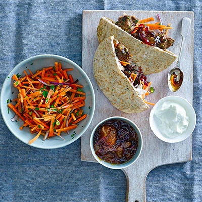

Pistachio Lamb Koftas With Apricot Relish

These budget-friendly, Middle Eastern-inspired lamb meatballs make a simple yet tasty supper, served with fruity chutney and crisp wholemeal pittas
Serves 4 | Takes 40 mins
mainmeatnutdairy
Method